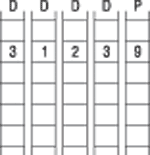
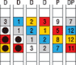

* По материалам компании Network Appliance.
Традиционная технология RAID с одиночной проверкой четности защищает от сбоя одного жесткого диска, но если во время восстановления этого диска выйдет из строя еще один или произойдет некорректируемая ошибка чтения бита, не исключается даже полная потеря части данных RAID-массива или тома. Поскольку емкость современных дисков постоянно увеличивается, а вероятность возникновения ошибки в бите остается постоянной, то по мере появления все новых накопителей растет и риск неисправимых битовых ошибок, а в результате эффективность защиты у RAID с одиночной четностью оказывается недостаточной. Следующий уровень защиты данных с помощью RAID - это RAID с двойной четностью (RAID Double Parity).
Обычный массив RAID с одиночной четностью защищает от одиночных ошибок (полного выхода из строя диска или ошибки чтения бита). В обоих случаях для восстановления данных используются данные и контрольные суммы с исправных дисков массива или тома. Если возникла ошибка чтения бита, то восстановление происходит практически мгновенно и массив или том не прекращают своей обычной работы. Но в случае неисправности диска нужно восстановить все его данные на запасном диске, поэтому до того, как эта операция завершится, массив или том остаются в незащищенном деградированном состоянии. Такая деградация - слабое место RAID с одиночной четностью, не соответствующее требованиям современных дисковых архитектур.
Дисковые архитектуры, как и другие компьютерные технологии, продолжают развиваться. По емкости сегодняшние диски на несколько порядков превосходят накопители тех времен, когда появились первые RAID-массивы. Однако рост емкости дисков не сопровождался улучшением их надежности, и, что еще более важно, вероятность однобитовых ошибок увеличивалась пропорционально емкости. Три этих фактора - большая емкость, тот же уровень надежности и увеличение числа однобитовых ошибок по мере появления все больших дисков - значительно снизили эффективность применения RAID с одиночной четностью для защиты данных.
С учетом того, что сегодня диски выходят из строя так же часто, как и тогда, когда технология RAID только начала использоваться для защиты данных, значение RAID сохраняется: если диск выходит из строя, то RAID просто восстанавливает его данные на запасном диске по контрольным данным и остальным дискам массива или тома. Но многократное увеличение емкости дисков с момента появления RAID привело к тому, что теперь восстановление данных с отказавшего диска происходит намного дольше (достаточно сравнить, например, время восстановления дисков емкостью 274 Гбайт и 36 Гбайт). Еще одна причина более медленного восстановления - это то, что сейчас часто используются диски самой большой емкости с интерфейсом ATA, которые работают медленнее SCSI-дисков и уступают им по надежности.
Схемы защиты
Существуют различные варианты расширения RAID с одиночной четностью для защиты данных по мере роста емкости дисков. Один из них состоит в том, чтобы устанавливать диски минимальной емкости, ускоряя тем самым восстановление данных после сбоя, однако на практике этот подход затруднен по нескольким причинам. Во-первых, плотность размещения критически важна для центров обработки данных с ограниченным пространством, а использование маленьких дисков означает уменьшение плотности хранения на единицу площади. Во-вторых, производители систем хранения могут использовать только те продукты, которые выпускают производители дисков, а диски малой емкости уже трудно найти на рынке.
Другой вариант защиты данных на больших дисках с помощью RAID с одиночной четностью более практичен, но после появления RAID DP и он по ряду причин стал менее привлекателен. Суть его в том, что, ограничивая размер массивов или томов, можно сократить время восстановления. Точно так же, как большой диск восстанавливается дольше, чем маленький, массив или том, построенный из большего числа дисков, потребует больше времени на восстановление данных на одном вышедшем из строя диске, чем массив или том с меньшим числом дисков. Однако у небольших массивов есть два неустранимых недостатка - во-первых, выход из строя одного диска в небольшом массиве или томе заметно уменьшает полезную емкость и увеличивает общую стоимость владения (TCO); во-вторых, производительность таких массивов и томов обычно хуже, что негативно отражается на работе пользователей.
Наиболее надежная реализация RAID с одиночной четностью - это RAID 1, или зеркалирование. При использовании RAID 1 строится зеркальная копия всех данных массива или тома на другом массиве (томе). Хотя зеркалирование по RAID 1 обеспечивает максимальную защиту от сбоев дисков, стоимость внедрения этого варианта очень высока, поскольку требуется вдвое больше емкости. Выше уже говорилось, что использование небольших массивов и томов для улучшения отказоустойчивости приводит к росту TCO из-за того, что уменьшается полезная емкость на каждый потраченный доллар. Так что с точки зрения совокупной стоимости владения зеркалирование RAID 1, требующее удвоения емкости, - это неоптимальное решение.
Защита данных с помощью RAID DP
Итак, в нынешних условиях увеличение емкости диска ухудшает защиту данных, поэтому покупатели и аналитики требуют от производителей нового, более эффективного и доступного по цене решения, улучшающего надежность RAID. Учитывая эти проблемы, компания Network Appliance (NetApp, http://www.netapp.com) разработала новый тип RAID под названием RAID DP (RAID Double Parity), значительно улучшающий защиту от отказов дисков по сравнению с обычным RAID (он используется сейчас во всех линейках систем хранения Network Appliance). Если сравнивать показатели среднего времени между потерей данных (Standard Mean Time To Data Loss, MTTDL), то при использовании одних и тех же дисков надежность у RAID DP в 10 000 лучше, чем у обычного RAID. При этом RAID DP обеспечивает значительно более высокий уровень защиты по сравнению с RAID 1, но по цене RAID 4. С точки зрения TCO RAID DP - это самый выгодный вариант построения систем хранения с высокой надежностью.
Варианты RAID, которые использует NetApp, - это модификация уровня RAID 4, при котором данные записываются в горизонтальные ряды и для каждого ряда вычисляется контрольная сумма, хранимая на специальном диске. Тем не менее в модифицированном NetApp RAID 4, как и в других традиционных вариантах RAID, используется схема с одиночной четностью, не способная обеспечить защиту от сбоев нескольких дисков.
Хорошо известно, что обычно проверка четности повышает отказоустойчивость, а RAID с одиночной четностью улучшает защиту данных. С учетом хорошей репутации RAID с одиночной четностью концепция RAID с двойной четностью представляется более привлекательной схемой защиты, что показывает приведенный выше пример с MTTDL. Но что же представляет собой RAID DP?
Если говорить упрощенно, в RAID DP добавляется второй диск для записи контрольных сумм четности для каждой группы RAID в томе. Группа RAID - это основание, на котором строятся тома. Каждая обычная группа NetApp RAID 4 состоит из нескольких дисков с данными и одним диском четности с контрольными суммами, а тома строятся из одной или нескольких групп RAID 4. Если диск четности тома RAID 4 хранит контрольные суммы для строк дисков в группе RAID 4, то на дополнительный диск четности RAID DP записываются контрольные суммы четности, вычисляемые по диагонали для дисков группы RAID DP. При таком двойном вычислении контрольной суммы (традиционной по горизонтали и дополнительной по диагонали) защита данных обеспечивается даже при выходе из строя двух дисков из одной группы RAID.
RAID DP по-прежнему применяет традиционную структуру RAID 4 с вычислением четности по горизонтали, т. е. реализация RAID 4 в системах хранения NetApp при переходе к RAID DP не меняется. Тот же самый процесс, при котором данные записываются по горизонтальным рядам и четность вычисляется для каждого ряда, в RAID DP служит исходным элементом двойной четности. При выходе одного диска из строя либо при ошибке чтения (из-за дефектного блока) или однобитовой ошибке данные восстанавливаются с помощью обычного RAID 4, механизм RAID DP не используется. В этом случае четность по диагонали RAID DP просто вводит дополнительный уровень защиты.
Контроль четности в RAID 4
Чтобы лучше понять принципы RAID DP и двойной проверки четности, рассмотрим схему 1, которая иллюстрирует работу горизонтальной проверки четности, используемой в традиционных решениях NetApp RAID 4. На ней показана традиционная группа RAID 4 с проверкой четности по рядам для группы из четырех дисков с данными (первые четыре колонки, обозначенные буквой D) и один диск для хранения контрольной суммы проверки четности по рядам (последняя колонка P). Ряды состоят из стандартных блоков по 4 Кбайт, как в традиционной для NetApp реализации RAID 4. Второй ряд заполнен выборочными данными из каждого 4-Кбайт блока и контрольной суммой четности, рассчитанной для данных в ряд, которая хранится в соответствующем блоке диска четности. В данном случае контрольная сумма четности равна сумме значений в каждом горизонтальном блоке (3 + 1 + 2 + 3 = 9). На практике четность вычисляется с использованием операции "исключающего ИЛИ" (XOR), но суммирование устроено достаточно просто и хорошо подходит для целей данного примера.

Схема 1
Если произошел одиночный сбой и нужно восстановить данные, выполняется процесс, обратный вычислению четности. Например, если выйдет из строя первый диск, то RAID 4 восстановит значение в первой колонке, равное 3, путем вычитания из контрольной суммы значений для остальных дисков (9 - 3 - 2 - 1 = 3). Этот пример восстановления с помощью RAID с одиночной точностью поможет понять, как устроена защита данных от множественных ошибок.
Двойной контроль в RAID DP
На схеме 2 к существующей группе RAID 4 добавлены одна диагональная полоска (синие блоки) и второй диск четности DP (шестая колонка). Из схемы 2 видно, что RAID DP - это частный случай основного решения RAID 4 с горизонтальной четностью.
Схема 2
Контрольная сумма четности по диагонали вычисляется по тому же алгоритму XOR, что и выше, и хранится на втором диске четности (1 + 2 + 2 + 7 = 12). Отметим, что диагональная полоска включает контрольную сумму четности по рядам в диагональную контрольную сумму четности. Механизм обработки дисков RAID DP такой же, как и в обычном RAID 4, включая диски с данными и диск четности. Из схемы 3 видно, как добавляются к контрольной сумме остальные данные для каждого блока и создаются соответствующие контрольные суммы четности по рядам и диагональным полоскам.
Схема 3
Из схемы 3 также видно, что в RAID DP диагональные полоски "обертываются" на краях конструкции четности по рядам. Однако две важные особенности RAID DP, позволяющие провести восстановление после сбоя двух дисков, не столь очевидны. Первая особенность заключается в том, что в каждую диагональную полоску не включается только один диск, причем для разных полосок эти пропущенные диски не совпадают. Как следствие, возникает вторая особенность - есть одна диагональная полоска, для которой контрольная сумма четности не вычисляется и не хранится на втором диске диагональной четности. В нашем примере эта диагональная полоска состоит из незакрашенных блоков. Далее из примера восстановления мы увидим, что пропуск одной диагональной полоски не влияет на способность RAID DP восстановить все данные в случае сбоя двух дисков.
Важно отметить, что те же особенности диагональной полоски RAID DP используются в реальных системах хранения, в которых в группы RAID объединены десятки дисков и миллионы горизонтальных рядов с данными образуют группы RAID 4. Проиллюстрировать работу RAID DP проще на небольшом примере, но подчеркнем, что восстановление групп RAID большого размера происходит точно так же, независимо от числа дисков в группе RAID.
Доказать, что RAID DP действительно восстанавливает все данные в случае сбоя двух дисков, можно двумя способами: используя математические теоремы и доказательства либо просто проследив, как будет происходить восстановление в случае сбоя двух дисков. Мы используем второй способ для доказательства правильности концепции двойной четности RAID DP.
Восстановление RAID DP
Вернемся к схеме 3 и обсудим, что произойдет, если в нормально работающей группе RAID выйдут из строя два диска - в первых двух колонках диаграммы все данные будут утрачены (схема 4).
Схема 4
После такого сбоя RAID DP сначала ищет первое звено цепочки, с которой можно начать восстанавливать содержимое дисков. Допустим, восстановление решено начать с первого блока синей диагональной полоски. Напомним, что RAID 4 восстановит данные после сбоя одного диска только в том случае, когда все остальные диски продолжают работу. Из схемы 4 мы видим, что отсутствует только один из синих блоков. При наличии четырех из пяти элементов полоски RAID DP располагает всей информацией, необходимой для восстановления потерянного синего блока. На схеме 5 показано, как эти данные восстановлены на запасном диске, который устанавливается в режиме горячей замены.
Схема 5
Данные из потерянного синего диагонального блока восстанавливаются при помощи той же арифметики, которую мы использовали выше (12 - 7 - 2 - 2 = 1). После восстановления потерянной информации синей диагональной полоски начинается процесс восстановления по горизонтальной четности в рядах: восстанавливается серый блок слева от восстановленного синего блока (9 - 3 - 2 - 1 = 3), как показано на схеме 6.
Схема 6
Затем RAID DP идет по этой цепочке, определяя, нельзя ли восстановить другие диагональные полоски, и повторяет процесс для потерянного серого блока, расположенного ниже восстановленного сначала синего блока (схема 7).

Схема 7
После этого у RAID DP оказывается достаточно информации для восстановления по горизонтальной четности незакрашенного блока в первой колонке (схема 8).
Схема 8
Как отмечалось выше, белая диагональная полоска не сохраняется, и другие диагональные блоки в существующей цепочке восстановить нельзя. В таком случае RAID DP будет искать новую цепочку, с которой она начнет восстанавливать диагональные блоки. В данном примере она определяет, может ли восстановить отсутствующие данные в желтой диагональной полоске, как показано на схеме 9.
Схема 9
После восстановления потерянных диагональных блоков снова начинается процесс восстановления блоков горизонтальной полоски по контрольной сумме. Когда восстановлен потерянный блок из диагональной полоски, то уже имеется достаточно информации для восстановления отсутствующего блока из горизонтальной полоски (схема 10).
Схема 10
После восстановления блока в горизонтальной полоске начинается восстановление диагональной четности для восстановления отсутствующего диагонального блока. RAID DP может продолжать текущую цепочку в красной диагональной полоске, как видно из схемы 11.
Схема 11
После восстановления диагонального блока снова начинается восстановление по блокам в горизонтальных полосках с помощью горизонтальной четности. Схема 12 показывает, что с помощью RAID DP успешно восстанавливаются все данные, потерянные в результате отказа двух дисков.
Схема 12
Этот пример подробно демонстрирует работу RAID DP, но следует обратить внимание на следующие неочевидные особенности этой технологии. При отказе двух дисков RAID DP автоматически повышает приоритет процессов восстановления, чтобы они выполнялись быстрее. В результате на восстановление после сбоя двух дисков уходит чуть больше времени, чем на восстановление после одиночного сбоя. Вторая особенность обработки двойного сбоя диска состоит в том, что чаще всего при таком отказе второй диск выходит из строя чуть позже первого, и потому удается восстановить часть информации с первого диска с помощью традиционной проверки четности по рядам. RAID DP автоматически подстраивается под такие события, начиная восстановление с того момента, когда два элемента потеряны в результате сбоя второго диска.
Использование RAID DP не требует дополнительных затрат или нового оборудования. Единственное, что нужно сделать для работы RAID DP, - это установить ОС Data ONTAP (специализированная ОС компании Network Appliance) версии 6.5 или более поздней.
Уровни защиты RAID DP
На самом низком уровне RAID DP обеспечивает защиту либо от сбоя двух дисков из одной группы RAID, либо от сбоя одного диска с последующей (до завершения восстановления) ошибкой чтения из дефектного блока или однобитовой ошибки. Более высокий уровень защиты достигается при использовании RAID DP вместе с ПО SyncMirror. В такой конфигурации обеспечивается защита от одновременного сбоя пяти дисков с последующей (до завершения восстановления) ошибкой чтения из дефектного блока или однобитовой ошибки.
Для создания тома в группах RAID на базе RAID DP надо выбрать опцию в FilerView при создании тома или добавить ключ -t raid_dp к традиционной команде vol create в интерфейсе командной строки. Таким образом, команда будет иметь вид: vol create volume_name -t raid_dp X (X - число дисков в томе). В системах NearStore по умолчанию создаются тома RAID DP. В листинге показан результат команды vol status в случае, когда четырехдисковая группа RAID создана для тома с именем test, а второй диск четности для диагональной четности обозначается dparity.
Результат команды vol statusVolume test (online, raid_dp) (zoned checksums) Plex /test/plex0 (online, normal, active) RAID group /test/plex0/rg0 (normal)
|
Преобразование существующих томов
После того, как устройство хранения переведено на ОС Data ONTAP 6.5, существующие тома легко преобразуются в RAID DP с помощью команды vol options volume_name raidtype raid_dp. После введения этой команды том сразу же будет обозначаться как RAID DP, но все контрольные суммы диагональных полосок должны быть рассчитаны и записаны на втором диске четности - только тогда будет работать защита RAID DP от сбоя двух дисков. Эти расчеты требуют времени и немного снижают производительность систем хранения. Продолжительность операции и ее влияние на производительность зависят от типа системы хранения (например, NearStore или FAS 960) и ее загрузки. Чтобы преобразование в RAID DP не слишком сильно сказывалось на операциях пользователей и приложений, рекомендуется его проводить в нерабочее время.
Для перехода от RAID 4 к RAID DP надо выполнить следующие требования. Поскольку преобразование происходит на уровне томов, нужен отдельный накопитель для второго диска диагональной четности в каждой группе RAID 4 в томе. Емкость этих накопителей должна быть не меньше, чем у дисков, используемых как диски четности рядов в обычном RAID 4.
Тома можно преобразовать обратно в RAID 4 командой vol с опцией volume_name raidtype raid4. В этом случае преобразование происходит мгновенно, поскольку диски с контрольными суммами обычного RAID 4 сохраняются и в RAID DP. Если группа RAID DP преобразуется в RAID 4, то в каждой группе RAID второй диск четности с контрольными суммами по диагонали освобождается и помещается в пул запасных дисков. Важно отметить, что для возврата к предыдущей версии Data ONTAP, не поддерживающей RAID DP, сначала нужно преобразовать тома RAID DP в тома RAID 4.
С точки зрения управления и операций разницы между томами RAID DP и RAID 4 нет, поэтому администраторам систем хранения NetApp не придется вносить существенных изменений в свои процедуры. В системе могут быть одновременно тома RAID 4 и RAID DP, но для управления ими администратор будет использовать одни и те же команды. Например, если тому RAID DP нужно выделить дополнительную емкость, то команда vol add volume_name X (X - число добавляемых дисков) выполняется точно так же, как для тома RAID 4.
Для RAID DP требуется два диска четности на каждую группу RAID, что влияет на эффективность использования емкости, хотя имеются способы свести к минимуму влияние этого фактора. В частности, NetApp рекомендует использовать группу RAID самого большого допустимого размера. Например, для NearStore R200 разрешается строить группы RAID DP не более чем из 14 дисков. Если следовать этой рекомендации, разница в эффективности использования емкости R200 в конфигурациях RAID DP и RAID 4 составит всего лишь несколько сотен гигабайт, что на несколько порядков меньше емкости самой системы.
Производительность томов RAID DP сравнима с показателями томов RAID 4. Производительность операции чтения практически одинакова для каждого типа групп RAID. В зависимости от типа чтения RAID DP выполняет эту операцию на 2-3% медленнее RAID 4 из-за необходимости записи на второй диск диагональной четности тома. Загрузка центрального процессора при переходе на RAID DP с RAID 4 практически не меняется.